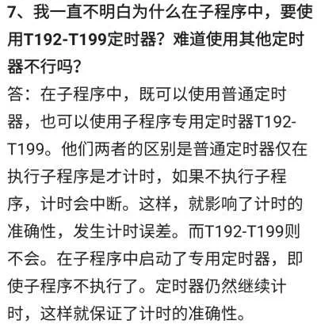
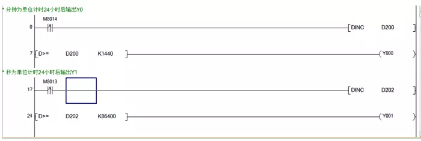
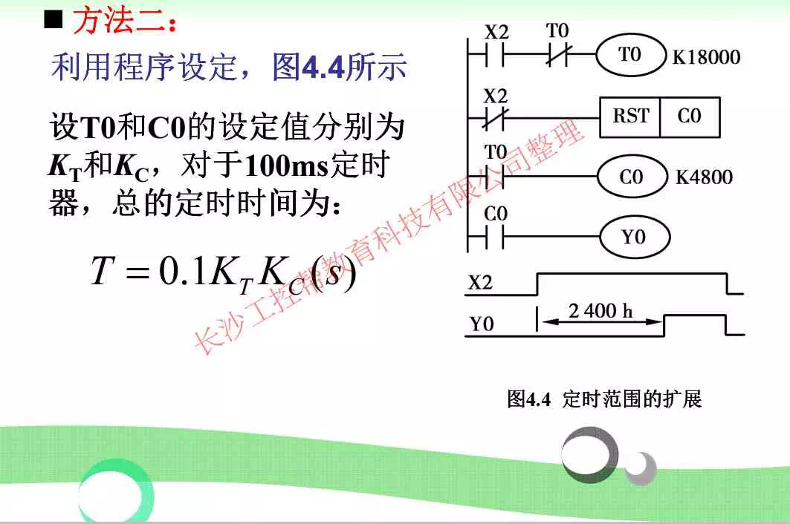
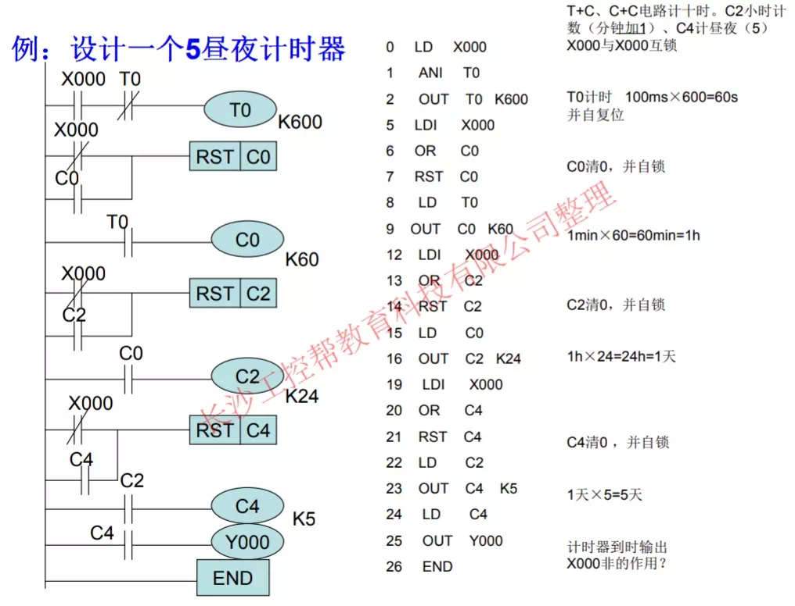
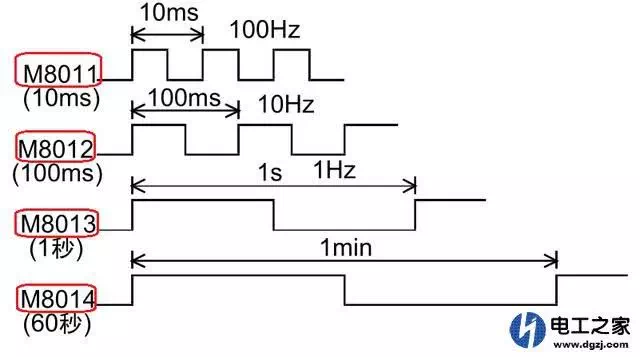
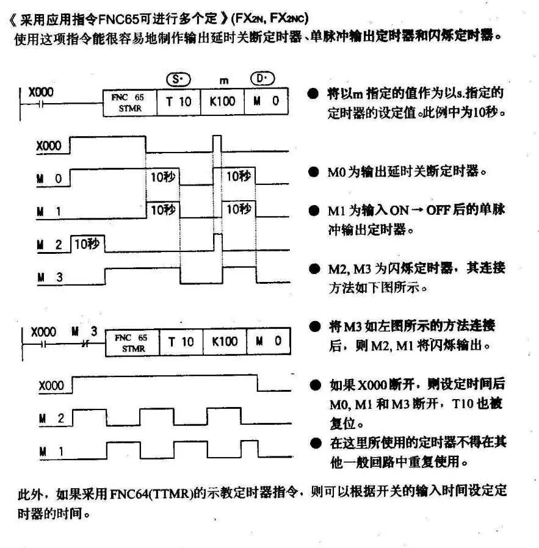
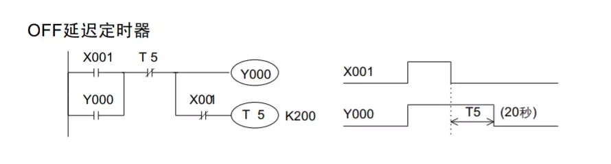
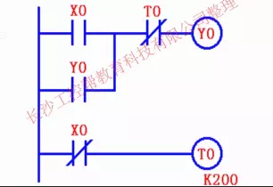
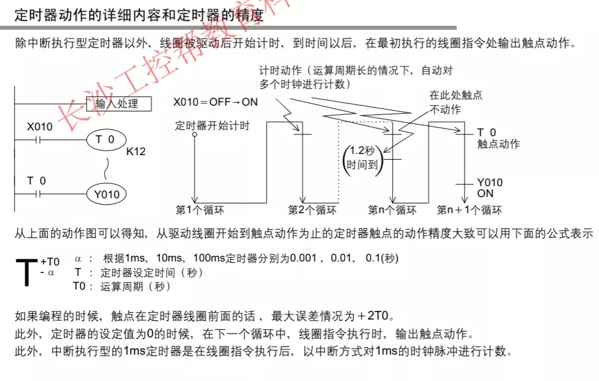

T192-T199定时器  定时精度（特殊辅助继电器：M8014为每分钟之内ON 30秒 OFF 30秒交替，所以最多可能误差1分钟；M8013为每秒钟ON 500ms OFF 500ms；M8012为ON 50ms OFF 50ms） 分钟为单位24小时后输出Y0 秒为单位24小时后输出Y0    定时器频率  输出延时关断定时器、单脉冲输出定时器和闪烁定时器  延迟定时器，断电延时   